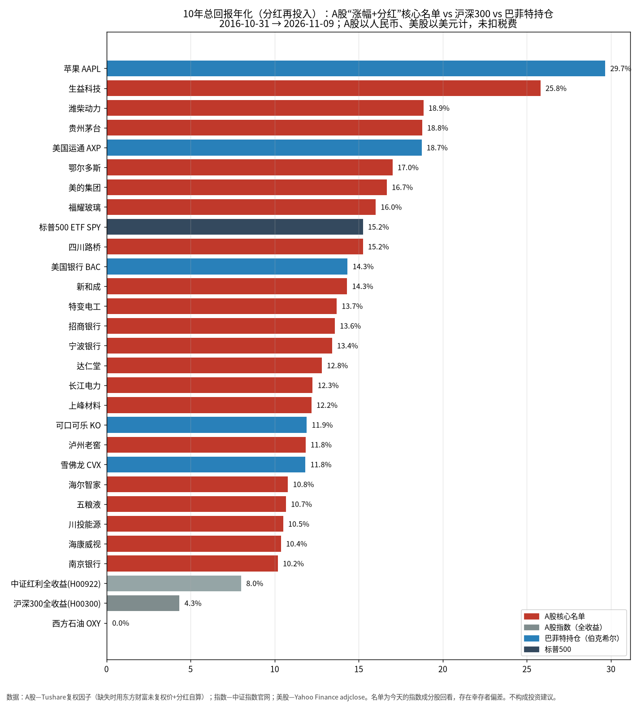
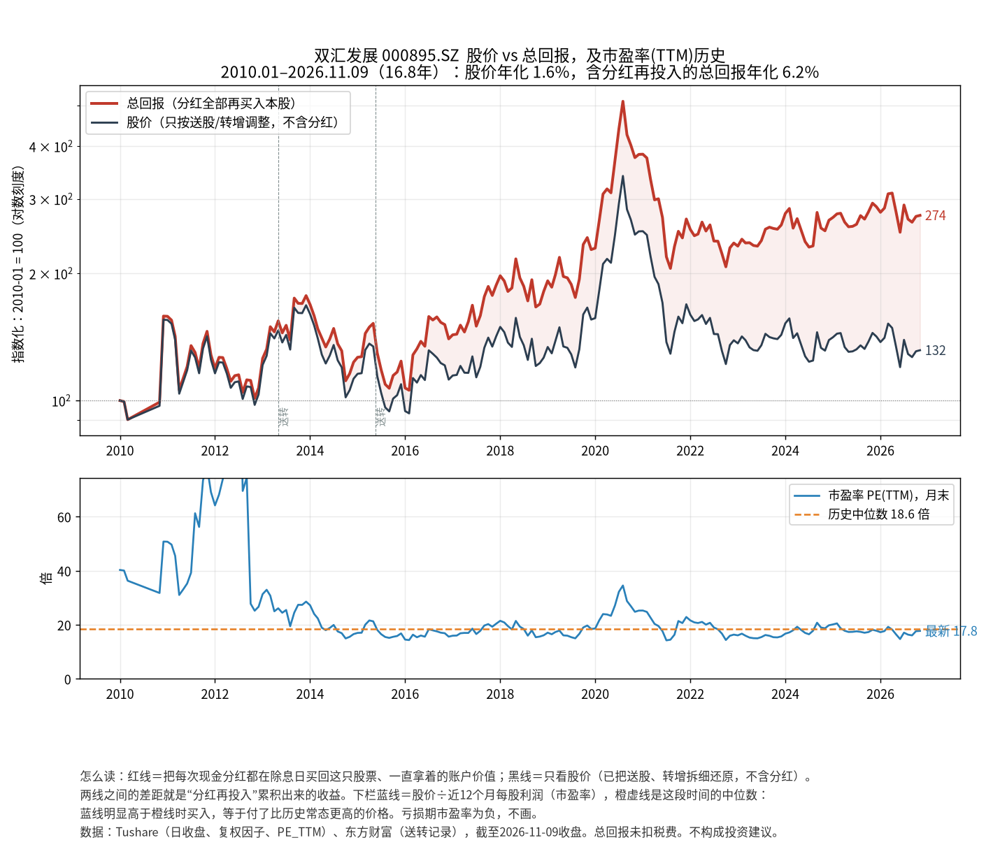
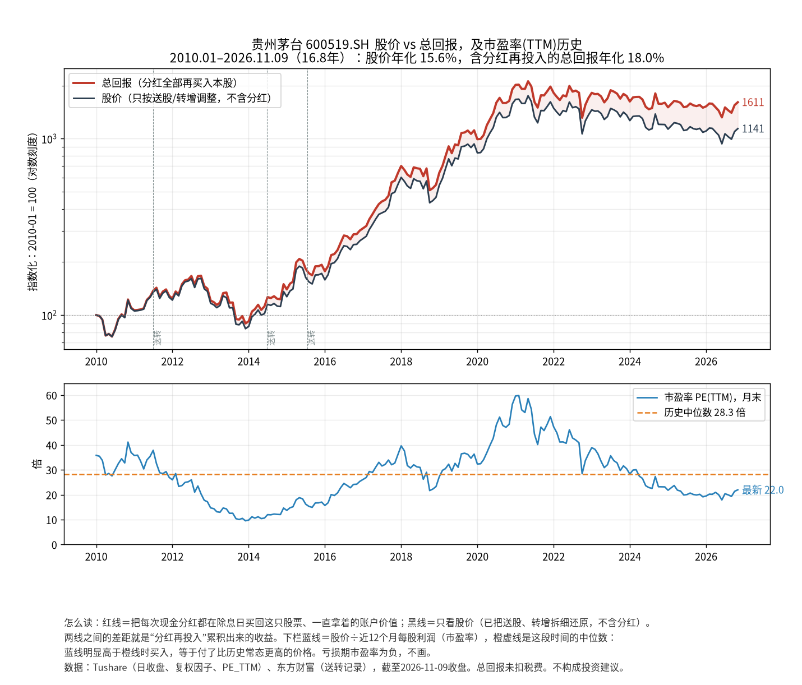
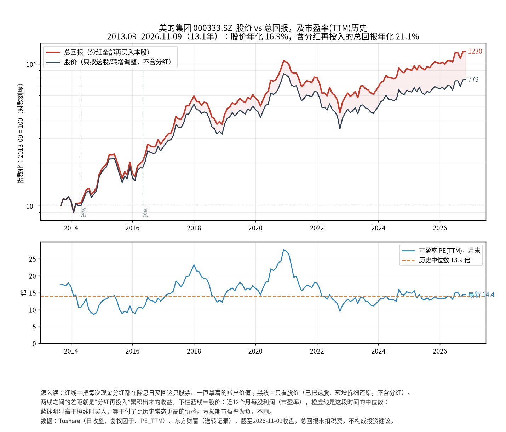
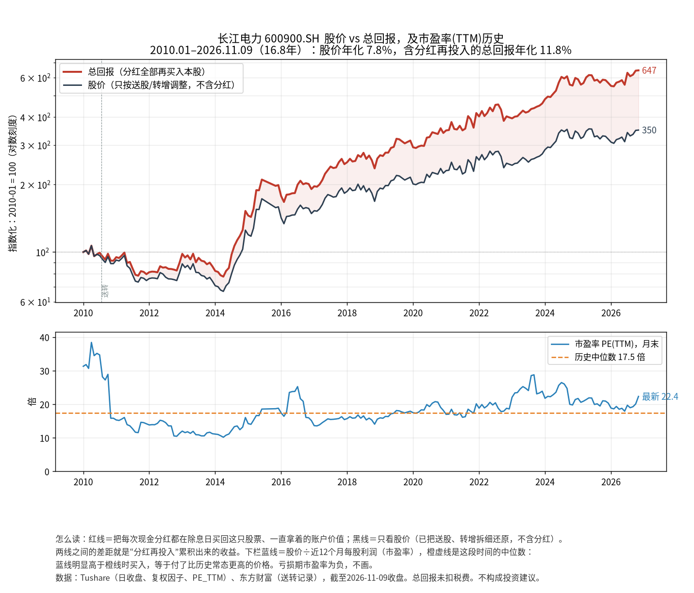
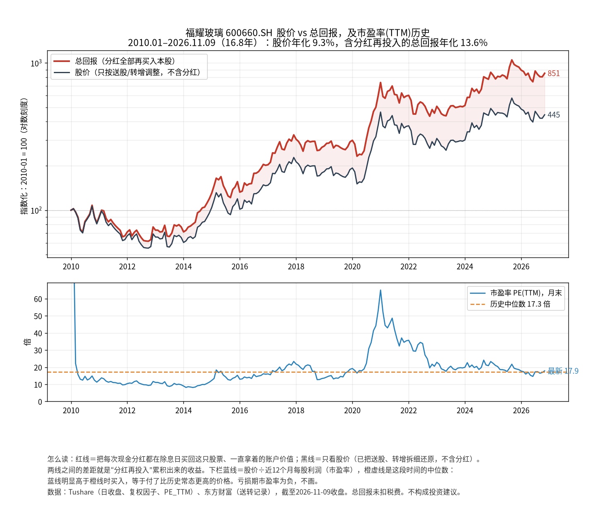
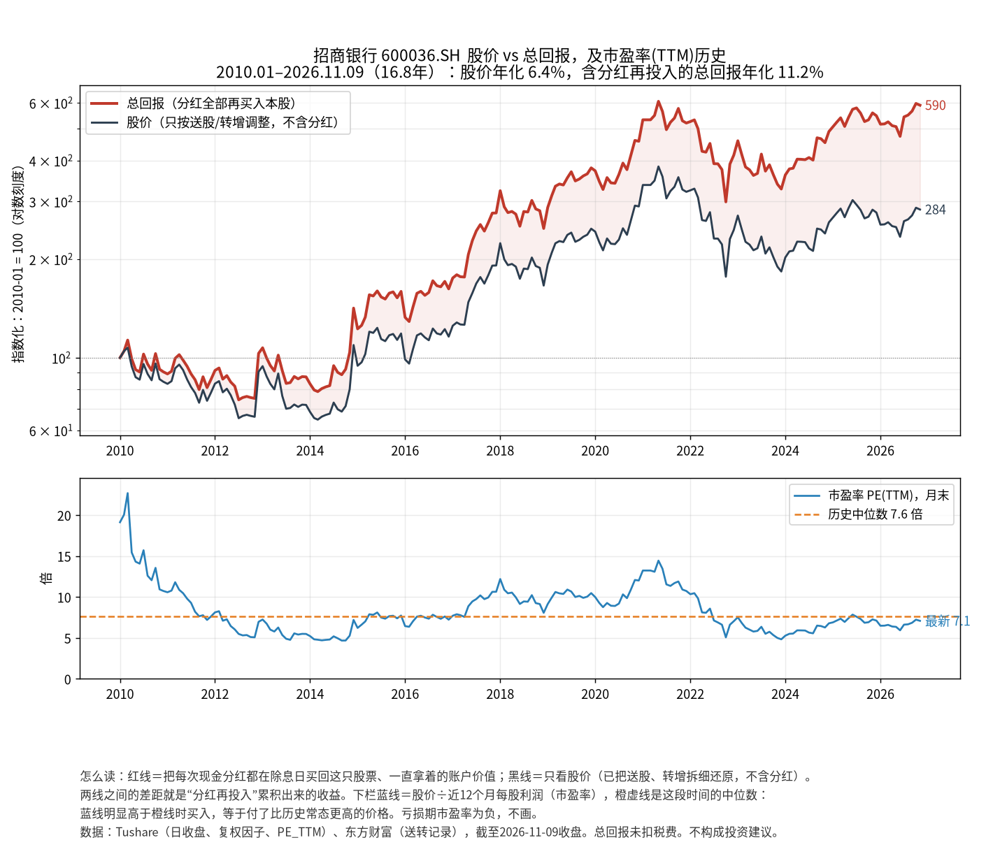

A股有没有“巴菲特式”股票？有，但570只里只有20只
持续分红的公司，股价看着不太行？用分红再投入后的10年总回报重新算一遍，再和巴菲特的持仓、沪深300放在一起比。
有，但很少：有完整10年行情的570只A股里，又涨得好、分红又稳定增长的只有20只。
这20只把分红再买回去，10年平均每年赚10%到26%。茅台18.8%、美的16.7%、福耀16.0%、招商银行13.6%、长江电力12.3%，和巴菲特持有的可口可乐（11.9%）、美国银行（14.3%）、雪佛龙（11.8%）在同一档。同期沪深300全收益只有4.3%。136
觉得“分红股股价不行”，一是只看了股价、没把分红算进去；二是2021年买得太贵：茅台那时市盈率接近60倍，那个月底买入，算上分红到今天还亏20.5%。
要打折扣：名单集中在白酒、家电、汽车零部件、银行、水电和几个周期行业；而且是拿今天的成分股往回看，结果偏乐观。
名词名词小白版：页里的行话，一句话说清7 个词
- 总回报
- 股价涨的钱，加上分红的钱。这篇都假设每次分红都在除息那天买回同一只股票（分红再投入）。打个比方：一棵果树：股价是树长高了多少，分红是每年结的果子；把果子换成树苗再种下去，十年后一共有多少棵树。
- 年化
- 十年下来平均每年涨多少，按利滚利算。年化10%，十年后本金约变成原来的2.6倍。打个比方：像存款的年利率。
- 股息率
- 一年分红 ÷ 股价。打个比方：买一套房出租，一年房租 ÷ 房价，就是租金回报率。
- 市盈率
- 股价 ÷ 每股一年的利润。数字越大，买得越贵。打个比方：花20万买一家每年赚1万的小店，就是20倍；利润不变的话要20年回本。
- 复权
- 公司送股、拆股后，一股变两股，股价对半跌，但你的钱没少。复权就是把以前的股价换算到同一把尺子上。打个比方：一个披萨切成更多块，每块变小，总量没变。
- ROE（净资产收益率）
- 股东投进去的每100元，一年给公司赚回多少。打个比方：100元本钱的小摊，一年赚20元，ROE就是20%。
- 幸存者偏差
- 只看今天还留在场上的选手，被淘汰的不算，结论会偏好。打个比方：只采访中了奖的人，问买彩票划不划算。
怎么读：八章从“问题”讲到“方法”。每章先一句导语、一句判断；密集的表格收在“展开细节”里。正文里的小号上标数字是来源编号，点一下看来源，全部列在文末来源与注释；图下面一行灰字是这张图的来源。本页只整理公开数据，不构成投资建议。过去的回报不代表以后。
问题：持续分红的公司，股价看着不太行？
前几天把茅台、苏泊尔、双汇、海天、海尔、伊利这六只的股价和分红画在一张图上，第一反应是：这些年年分红的公司，股价怎么不太行？
时寒冰举的巴菲特持仓例子，都是又涨得好、又分红不错。A股就没有这样的公司吗？
要回答这个问题，先得把“涨得好”算对。只看股价不够，因为分红那部分钱，股价图上看不到。所以这篇全部用总回报来比：股价涨的钱，加上分红再买回去攒下的钱。
答案：有，但570只里只有20只
先把范围放大到今天三份指数的全部成分股，再定五道门槛，最后和巴菲特持仓、指数放在一起比。
范围：今天的沪深300、中证500、中证红利三份成分股名单，再加上点名要看的几只，一共837只。5其中570只在10年前（2016年10月底）已经上市，有完整行情。
五道门槛，要同时满足：
- 10年总回报年化 ≥10%（2016-10-31 到 2026-11-09）；
- 10年平均股息率 ≥2%；
- 2016到2025这十个财年，每年都有现金分红；
- 每股分红10年平均每年至少多5%，中间比上一年少一成以上的最多两次；
- 2016–2025年平均ROE ≥12%。
过了五道门槛的只有20只，占570只的3.5%。对比一下：570只里10年总回报年化达到10%的有154只，是负数的有160只，排在正中间那只是4.4%。1

来源Tushare Pro 数据接口 1；东方财富数据中心 2；中证指数有限公司 3；中证指数有限公司 4；Yahoo Finance 历史行情 6
挑几行看：
| 10年总回报年化 | 10年股价年化 | 10年平均股息率 | |
|---|---|---|---|
| 苹果（巴菲特持仓） | 29.7% | 28.5% | 0.9% |
| 生益科技 | 25.8% | 22.8% | 2.2% |
| 贵州茅台 | 18.8% | 16.3% | 2.0% |
| 美国运通（巴菲特持仓） | 18.7% | 17.1% | 1.2% |
| 美的集团 | 16.7% | 12.7% | 3.0% |
| 福耀玻璃 | 16.0% | 12.3% | 3.0% |
| 标普500 ETF（SPY） | 15.2% | 13.4% | 1.6% |
| 美国银行（巴菲特持仓） | 14.3% | 11.8% | 2.0% |
| 招商银行 | 13.6% | 9.2% | 3.8% |
| 长江电力 | 12.3% | 8.3% | 3.5% |
| 可口可乐（巴菲特持仓） | 11.9% | 8.5% | 3.0% |
| 雪佛龙（巴菲特持仓） | 11.8% | 7.2% | 4.2% |
| 中证红利全收益（H00922） | 8.0% | — | — |
| 沪深300全收益（H00300） | 4.3% | — | — |
| 西方石油（巴菲特持仓） | 0.0% | -2.6% | 3.2% |
来源Tushare 1；中证指数 3 4；Yahoo Finance 6
展开细节20只核心名单全表（按10年总回报排序）12 列，可左右滑动
| 名称 | 代码 | 行业 | 10年总回报年化 | 10年股价年化 | 15年总回报年化 | 10年平均股息率 | 连续现金分红（年） | 每股分红10年年化增长 | 10年里分红降过几次 | ROE平均（2016–2025） | 市盈率（现价÷2025年每股利润） |
|---|---|---|---|---|---|---|---|---|---|---|---|
| 生益科技 | 600183 | 元件 | 25.8% | 22.8% | 23.6% | 2.2% | 28 | 19.2% | 1 | 16.8% | 50.8 |
| 潍柴动力 | 000338 | 汽车零部件 | 18.9% | 14.8% | 9.4% | 3.2% | 20 | 22.0% | 2 | 15.2% | 15.0 |
| 贵州茅台 | 600519 | 白酒Ⅱ | 18.8% | 16.3% | 17.9% | 2.0% | 25 | 23.8% | 0 | 31.9% | 22.0 |
| 鄂尔多斯 | 600295 | 冶钢原料 | 17.0% | 11.7% | 8.1% | 4.1% | 25 | 39.3% | 2 | 13.9% | 17.5 |
| 美的集团 | 000333 | 白色家电 | 16.7% | 12.7% | — | 3.0% | 13 | 18.3% | 0 | 23.9% | 15.5 |
| 福耀玻璃 | 600660 | 汽车零部件 | 16.0% | 12.3% | 17.8% | 3.0% | 17 | 10.8% | 1 | 18.1% | 15.8 |
| 四川路桥 | 600039 | 基础建设 | 15.2% | 10.9% | 15.2% | 3.2% | 15 | 30.0% | 2 | 15.8% | 10.5 |
| 新和成 | 002001 | 化学制品 | 14.3% | 11.3% | 13.0% | 2.3% | 22 | 28.5% | 2 | 18.1% | 11.8 |
| 特变电工 | 600089 | 电网设备 | 13.7% | 10.6% | 9.0% | 2.4% | 26 | 10.0% | 2 | 12.3% | 16.1 |
| 招商银行 | 600036 | 银行Ⅱ | 13.6% | 9.2% | 13.6% | 3.8% | 24 | 11.3% | 0 | 16.0% | 7.5 |
| 宁波银行 | 002142 | 银行Ⅱ | 13.4% | 10.3% | 15.1% | 2.1% | 19 | 13.2% | 2 | 16.1% | 8.0 |
| 达仁堂 | 600329 | 中药Ⅱ | 12.8% | 9.4% | 12.5% | 2.0% | 14 | 41.4% | 1 | 15.4% | 15.1 |
| 长江电力 | 600900 | 电力 | 12.3% | 8.3% | 14.7% | 3.5% | 23 | 9.6% | 0 | 15.1% | 21.2 |
| 上峰材料 | 000672 | 水泥 | 12.2% | 8.2% | — | 3.3% | 12 | 34.4% | 2 | 25.2% | 19.1 |
| 泸州老窖 | 000568 | 白酒Ⅱ | 11.8% | 8.8% | 8.1% | 2.3% | 25 | 21.9% | 0 | 26.7% | 10.9 |
| 海尔智家 | 600690 | 白色家电 | 10.8% | 8.0% | 12.7% | 2.2% | 27 | 18.5% | 0 | 18.7% | 10.2 |
| 五粮液 | 000858 | 白酒Ⅱ | 10.7% | 7.9% | 7.6% | 2.2% | 18 | 20.5% | 1 | 21.3% | 32.4 |
| 川投能源 | 600674 | 电力 | 10.5% | 7.3% | 13.9% | 3.0% | 19 | 6.4% | 0 | 12.8% | 18.1 |
| 海康威视 | 002415 | 计算机设备 | 10.4% | 7.8% | 16.2% | 2.1% | 17 | 14.0% | 2 | 26.3% | 22.4 |
| 南京银行 | 601009 | 银行Ⅱ | 10.2% | 5.2% | 13.6% | 4.7% | 19 | 12.8% | 0 | 14.9% | 7.1 |
“—”表示上市不满15年。市盈率这一列是现价 ÷ 2025年报每股利润，和下文图里的市盈率（近12个月利润）口径不同。
为什么会觉得“股价不行”
两个原因：一个是看法上的，分红没算进去；一个是价格上的，2021年太贵。
第一，分红没算进股价。分红越多的公司，股价图越“吃亏”：每次分红，股价都要扣掉同样多的钱（除息），钱进了你的口袋，图上却像是跌了。长江电力10年股价年化8.3%，加上分红是12.3%；招商银行股价9.2%，加上分红是13.6%。双汇最明显：从2010年1月算起，股价年化只有1.6%，加上分红是6.2%。

第二，2021年太贵。茅台的市盈率在2021年2月底到了59.8倍（那个月盘中最高73.3倍），是2010年以来月底的最高值。那个月底买入的人，算上这几年的分红，到2026年11月9日还亏20.5%，平均每年−4.0%。同一家公司，2016年10月底市盈率24.1倍时买入，10年平均每年赚18.8%。1
巴菲特在1989年的股东信里写过：用合理的价格买一家好公司，远比用好价格买一家普通公司强。72021年按60倍买茅台，是好公司、价格不合理；之后回报差，正好印证了这句话。
名单里五只有代表性的公司
20只里挑了分红最稳、最像巴菲特风格的五只画图：茅台、美的、长江电力、福耀、招商银行。
它们10年里每股分红比上一年少一成以上的次数是0到1次。没有按涨幅挑，因为涨得最多的几只（生益科技、潍柴动力、鄂尔多斯）更偏周期，第六章会讲。
每张图上半部分是股价（黑）和总回报（红），起点都算100；下半部分是市盈率和它自己的历史中位数（橙色虚线）。蓝线在橙线上面很多的时候买，等于付了比平时更高的价钱。下面五张图的年化都从2010年1月（美的从2013年9月）算到2026年11月9日，和上一章表里的10年数字不是同一段时间。

茅台：16.8年股价年化15.6%，总回报年化18.0%。市盈率现在22.0倍，低于它2010年以来的中位数28.3倍。ROE平均31.9%，名单里最高。

美的：13.1年股价年化16.9%，总回报年化21.1%。市盈率14.4倍，和中位数13.9倍差不多。10年里每股分红没有一次比上一年少一成以上。

长江电力：股价年化7.8%，总回报年化11.8%，差不多三分之一的回报来自分红。市盈率现在22.4倍，明显高于它的中位数17.5倍，是这五只里现在相对自己最贵的一只。

福耀：股价年化9.3%，总回报年化13.6%。市盈率17.9倍，中位数17.3倍。

招商银行：股价年化6.4%，总回报年化11.2%，红线和黑线拉得最开。市盈率7.1倍，略低于中位数7.6倍；10年平均股息率3.8%。
差一点没进名单的
没过门槛不等于不好，只是不符合“涨得好、分红稳、还在涨”这一套标准。几个常被问到的：
- 中国神华：10年总回报年化20.0%，平均股息率7.3%，都很高。但按财报年份，2017年每股分红3.42元（含特别分红），2018年只有0.88元；10年里降过3次。
- 陕西煤业（21.7%）、兖矿能源（18.0%）、万华化学（18.4%）：涨得多，分红跟着煤价、化工品价格大起大落。
- 宁沪高速：分红很稳，每股分红从2015年的0.40元慢慢加到2025年的0.49元；但10年总回报9.1%，差一点到10%。
- 格力电器：总回报11.5%，平均股息率5.3%，但2017年度没有分红。
- 海螺水泥（5.3%）、伟星新材（4.5%）：分红不少，但股价拖了后腿。
- 恒瑞医药（11.5%）、片仔癀（11.9%）：涨得可以，但股息率分别只有0.3%和0.7%，主要靠股价。
- 中国移动、公牛集团、迈瑞医疗：A股上市不满10年，没法算。
最早看的六只，是之前按“赚钱能力强（ROE长期≥15%）、自由现金流多数年份为正、连续分红”挑出来的，生意本身都不差。按10年总回报看，茅台和海尔过了全部门槛；海天股息率不够2%；伊利9.1%、苏泊尔8.6%、双汇6.0%没到10%。
展开细节茅台、海尔、海天、伊利、苏泊尔、双汇（同口径）12 列，可左右滑动
| 名称 | 代码 | 行业 | 10年总回报年化 | 10年股价年化 | 15年总回报年化 | 10年平均股息率 | 连续现金分红（年） | 每股分红10年年化增长 | 10年里分红降过几次 | ROE平均（2016–2025） | 市盈率（现价÷2025年每股利润） |
|---|---|---|---|---|---|---|---|---|---|---|---|
| 贵州茅台 | 600519 | 白酒Ⅱ | 18.8% | 16.3% | 17.9% | 2.0% | 25 | 23.8% | 0 | 31.9% | 22.0 |
| 海尔智家 | 600690 | 白色家电 | 10.8% | 8.0% | 12.7% | 2.2% | 27 | 18.5% | 0 | 18.7% | 10.2 |
| 海天味业 | 603288 | 调味发酵品Ⅱ | 10.4% | 8.8% | — | 1.4% | 13 | 16.7% | 0 | 28.4% | 28.7 |
| 伊利股份 | 600887 | 饮料乳品 | 9.1% | 5.6% | 13.6% | 3.0% | 15 | 11.9% | 0 | 22.9% | 17.0 |
| 苏泊尔 | 002032 | 小家电 | 8.6% | 4.8% | 11.8% | 3.4% | 18 | 19.8% | 2 | 29.8% | 16.9 |
| 双汇发展 | 000895 | 食品加工 | 6.0% | 0.7% | 4.8% | 5.8% | 26 | 1.5% | 3 | 29.2% | 16.7 |
还有一批“涨得多、分红少”的，10年总回报年化≥15%，但平均股息率不到2%，比如中际旭创、恒立液压、紫金矿业、山西汾酒、立讯精密。它们更像成长股，不是这篇要找的类型。
展开细节涨得多但股息率不到2%的13只12 列，可左右滑动
| 名称 | 代码 | 行业 | 10年总回报年化 | 10年股价年化 | 15年总回报年化 | 10年平均股息率 | 连续现金分红（年） | 每股分红10年年化增长 | 10年里分红降过几次 | ROE平均（2016–2025） | 市盈率（现价÷2025年每股利润） |
|---|---|---|---|---|---|---|---|---|---|---|---|
| 中际旭创 | 300308 | 通信设备 | 42.4% | 42.0% | — | 0.2% | 15 | 75.3% | 0 | 15.6% | 46.1 |
| 天孚通信 | 300394 | 通信设备 | 33.5% | 32.0% | — | 1.0% | 12 | 34.2% | 0 | 21.7% | 47.3 |
| 恒立液压 | 601100 | 工程机械 | 30.4% | 29.2% | 18.9% | 0.8% | 15 | 40.4% | 1 | 19.9% | 44.8 |
| 思源电气 | 002028 | 电网设备 | 26.7% | 25.9% | 19.3% | 0.7% | 19 | 15.4% | 1 | 13.6% | 28.0 |
| 紫金矿业 | 601899 | 工业金属 | 26.6% | 24.0% | 15.7% | 1.8% | 19 | 25.9% | 0 | 18.3% | 14.6 |
| 山西汾酒 | 600809 | 白酒Ⅱ | 25.2% | 23.1% | 13.8% | 1.3% | 11 | 39.9% | 1 | 32.2% | 13.0 |
| 立讯精密 | 002475 | 消费电子 | 22.7% | 22.2% | 25.5% | 0.3% | 16 | 32.3% | 1 | 21.4% | 22.2 |
| 东方电缆 | 603606 | 电网设备 | 19.7% | 18.8% | — | 0.5% | 12 | 44.4% | 1 | 17.8% | 21.2 |
| 同花顺 | 300033 | 软件开发 | 16.3% | 14.8% | 32.1% | 1.2% | 17 | 21.5% | 2 | 30.1% | 34.1 |
| 三环集团 | 300408 | 元件 | 16.3% | 15.2% | — | 0.9% | 12 | 9.9% | 2 | 15.0% | 54.6 |
| 汇川技术 | 300124 | 自动化设备 | 16.1% | 15.3% | 16.8% | 0.7% | 16 | 11.6% | 1 | 20.4% | 30.8 |
| 石英股份 | 603688 | 非金属材料Ⅱ | 15.5% | 13.7% | — | 2.0% | 12 | 6.8% | 2 | 20.2% | 122.4 |
| 洛阳钼业 | 603993 | 工业金属 | 15.2% | 13.4% | — | 1.4% | 14 | 27.6% | 2 | 12.6% | 14.3 |
这份名单要打几个折扣
下面五条，都会让结果看起来比实际好，或者让人误用。
- 幸存者偏差。名单是今天的成分股往回看。10年里被踢出指数、退市、或者表现太差没进指数的公司，都不在样本里。真在2016年闭着眼买一篮子，结果会比这里差。
- 行业集中。20只里白酒3只（茅台、泸州老窖、五粮液），银行3只（招商、宁波、南京），家电2只（美的、海尔），电力2只（长江电力、川投），汽车零部件2只（潍柴、福耀）；剩下8只各占一个行业，多是覆铜板、铁合金、基建、化工、电网设备、水泥这类周期行业。周期股的分红会跟着行业起伏，不像可口可乐那样年年平稳地加。
- 买入价决定回报。同一只茅台，24倍市盈率买和60倍买，是两种结果（见第三章）。
- 生益科技排第一，但现在很贵。它现价 ÷ 2025年每股利润约50.8倍，涨幅主要来自最近这一段行情。过去10年的25.8%，不能直接拿来当以后的预期。
- 巴菲特的持仓也不是只只都好。西方石油10年总回报0.0%。另外美股是美元计、A股是人民币计，没有换算汇率，也没扣分红的税。
这些数字怎么用
最实用的一招：看一只好公司的市盈率，现在高于还是低于它自己的历史中位数。
按这个看法（市盈率是近12个月口径，中位数取2010年以来，美的从2013年9月起）：
| 现在的市盈率 | 自己的历史中位数 | 相对自己 | |
|---|---|---|---|
| 贵州茅台 | 22.0 | 28.3 | 低于中位数 |
| 美的集团 | 14.4 | 13.9 | 接近 |
| 福耀玻璃 | 17.9 | 17.3 | 接近 |
| 招商银行 | 7.1 | 7.6 | 略低 |
| 长江电力 | 22.4 | 17.5 | 明显高于 |
来源Tushare 每日指标 1，截至 2026-11-09
三条使用提醒：
- 只拿好公司比。生意变坏的公司，市盈率低可能是因为它真的值这么多。
- 周期股要反过来想。煤、化工、钢铁的利润在顶点时，市盈率反而最低；看起来便宜的时候，可能正是利润最好、要往下走的时候。
- 想要分红，就要把分红算进回报里看，不要只盯着股价图。
方法和数据说明
每个数字怎么来的，哪些数据源有坑。
展开细节总回报、股价、股息率、分红、ROE 的算法，以及为什么不用东方财富后复权
- 时间：10年是2016-10-31收盘到2026-11-09收盘，15年从2011-10-31起。A股以人民币、美股以美元计，没扣税费。
- 总回报怎么算：用Tushare的复权因子（收盘价 × 复权因子）1，等于在每次除息那天，按除权后的参考价把现金分红买回这只股票。抽查茅台2026-06-26那次除息：复权因子跳了1.02367倍，和“前一天收盘价 ÷（前一天收盘价 − 每股分红）”算出来一样。
- 为什么没用东方财富的“后复权”价格：抽查发现，它在两次除息之间价格比例会慢慢漂移，不是严格按比例复权，算出来的10年年化比实际低约1.3个百分点：茅台17.3%对18.8%，双汇4.4%对6.0%，海尔9.5%对10.8%。2
- 交叉核对：又用东方财富的不复权日线加分红记录2自己算了一遍，和Tushare结果的中间值差0.0个百分点。差超过0.3个百分点的有30只，原因是东方财富的分红表漏了特别分红（比如茅台2022、2023年的两笔特别分红，中国神华2017年那笔）和配股，所以以Tushare为准。格力、云南白药等26只在2016-10-31停牌，Tushare当天没有价格，用的是自算值。
- 股价年化：不复权价格，只把送股、转增换算回来，不含分红。
- 股息率：Tushare的近12个月股息率，取2016–2025每年最后一个交易日，求平均。1
- 连续分红、每股分红增长、降了几次：Tushare分红数据，只算已经实施的，含特别分红，按送转换算到今天的股本，按财报年份加总；“降”指比上一年少一成以上。1
- ROE：东方财富年报加权ROE，2016–2025平均。2
- 指数：中证指数官网沪深300全收益（2016-10-31为3989.45，2026-11-09为6108.28）和中证红利全收益（5599.87和12126.97）。34官网接口查不到2011年的数，所以指数没有15年对比。
- 美股：Yahoo Finance的复权收盘价（含分红再投入），股息率用当年分红 ÷ 年末收盘价。6
- 数据截止：2026-11-09收盘（北京时间15:00）。
本页只整理公开数据，不构成投资建议。
来源与注释
来源列表 点任一上标会先弹出来源摘要
均于 2026-11-10 用接口或浏览器取数核对。原始下载不入库，加工后的数字在 invest/buffett_data.json。
- Tushare Pro 数据接口：日线行情 daily、复权因子 adj_factor、每日指标 daily_basic（市盈率、股息率）、分红送股 dividend（取数 2026-11-10） https://tushare.pro/document/2
- 东方财富数据中心：分红送配明细 RPT_SHAREBONUS_DET、业绩报表 RPT_LICO_FN_CPD（加权ROE、每股收益）、日K线（不复权和后复权，取数 2026-11-10） https://data.eastmoney.com/yjfp/
- 中证指数有限公司：沪深300全收益指数 H00300 https://www.csindex.com.cn/#/indices/family/detail?indexCode=H00300
- 中证指数有限公司：中证红利全收益指数 H00922 https://www.csindex.com.cn/#/indices/family/detail?indexCode=H00922
- 中证指数有限公司：沪深300、中证500、中证红利成分股名单（2026-11-09），另两份见 000905cons.xls、000922cons.xls https://oss-ch.csindex.com.cn/static/html/csindex/public/uploads/file/autofile/cons/000300cons.xls
- Yahoo Finance 历史行情：KO、AXP、AAPL、BAC、CVX、OXY、SPY 的复权收盘价和分红记录 https://finance.yahoo.com/quote/KO/history/
- Berkshire Hathaway 1989 年致股东信（“用合理的价格买好公司”） https://www.berkshirehathaway.com/letters/1989.html